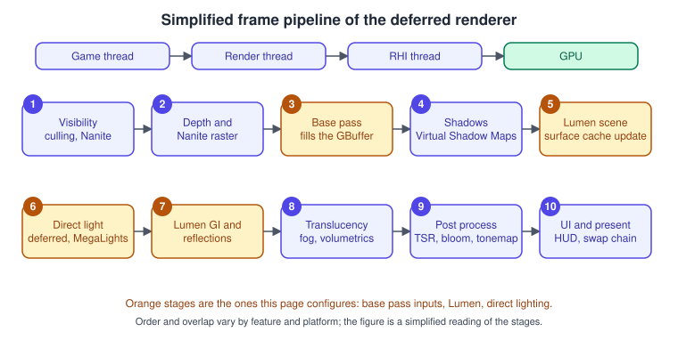
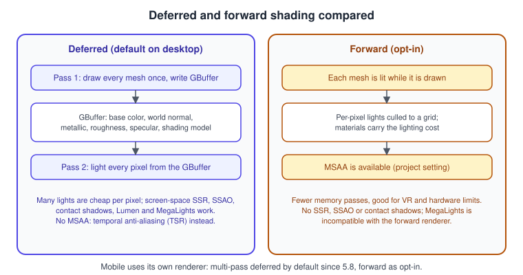
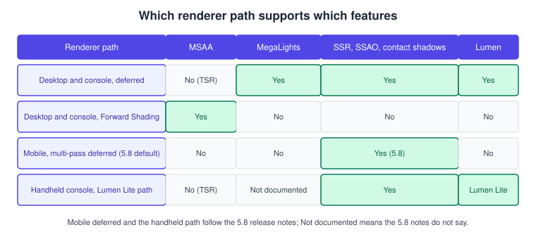
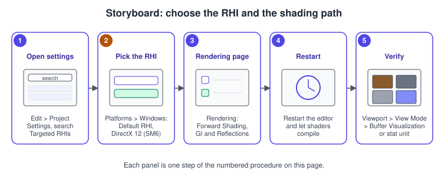

Rendering Overview
|
This content was generated with the assistance of AI and should be verified against the official documentation before being relied on in production. |
Rendering in Unreal Engine is not one algorithm but a family of renderer paths that share a scene representation, a material system and a hardware abstraction. The engine you ship chooses a path (deferred or forward, desktop or mobile), a graphics API through the RHI (Rendering Hardware Interface), a shader model, and a set of scalability levels that trade quality for speed. This page is the map: it explains the frame at a high level, what each path can and cannot do, how the RHIs and shader models relate to features such as Lumen and MegaLights, and how VR fits in. The detail of materials, lights and geometry is in the pages it links to.
The facts on this page were checked in November 2026 against the Unreal Engine 5.8 documentation (released 17 June 2026, latest hotfix found 5.8.4). Windows targets recommend Visual
Studio 2026 18.0 or newer with a Windows SDK of 10.0.26100 or newer, and the recommended hardware is Windows 11 with a DirectX 12 card with 8 GB of video memory; Lumen and MegaLights need
Shader Model 6 hardware (AMD RX 6000, Intel Arc A or NVIDIA RTX 2000 series or newer). Mobile targets use Vulkan or OpenGL ES on Android and Metal on iOS. The running example is the
Bookshelf (level L_Library, module Bookshelf); the engine-neutral theory is in
The Rendering Pipeline and Lighting and Shading Models. For readers coming from Unity,
Epic’s page for Unity developers maps the concepts and Render Pipelines Overview covers the Unity side.
The frame at a glance

Work is split across threads. The game thread runs gameplay, Blueprints and ticking components. The render thread mirrors the scene, decides what is visible and builds the list of GPU work; the RHI thread translates that list into API calls (DirectX 12, Vulkan or Metal command lists); the GPU executes it. Because the threads overlap, the render thread usually works on frame N while the game thread already simulates frame N+1, and each has its own time on the profiler (see Profiling and Optimization). The engine builds the GPU work as a graph of passes and resources (the Render Dependency Graph), which lets it schedule passes, alias memory and run suitable passes on the async compute queue.
On the GPU, the deferred renderer, the default on desktop and console, works through these stages, in simplified order:
-
Visibility: distance, frustum and occlusion culling on the CPU; with Nanite, per-cluster culling on the GPU (see Nanite and Virtual Geometry).
-
Depth and Nanite raster: opaque geometry fills the depth buffer; Nanite meshes rasterize into a visibility buffer.
-
Base pass: every opaque material writes its surface properties into the GBuffer (next section).
-
Shadows: Virtual Shadow Maps render the pages the view needs (see Lighting, Lumen and MegaLights).
-
Lumen scene update: the surface cache that Lumen traces against is refreshed.
-
Direct light: lights are applied to every pixel from the GBuffer, by the classic deferred light path or by MegaLights.
-
Lumen GI and reflections: indirect light is gathered and combined with the direct result.
-
Translucency, fog and volumetrics: drawn after opaque lighting, with their own lighting modes.
-
Post process: temporal anti-aliasing and upscaling (Temporal Super Resolution, TSR, which runs after depth of field), bloom, exposure, tone mapping (see Post-Processing and Cameras).
-
UI and present: UMG and Slate draw on top, the image goes to the swap chain.
Deferred versus forward shading

The deferred renderer
In a deferred renderer geometry and lighting are separate. The base pass draws each mesh once and writes the surface description into several full-screen textures, the GBuffer: base colour, world normal, metallic, roughness, specular and a shading-model id (more with Substrate, see Materials and the Material Editor). Lighting then reads the GBuffer once per pixel, so the cost of a light depends on the pixels it touches, not on how many meshes they belong to. That is why many lights, decals, screen-space ambient occlusion and reflections, contact shadows, Lumen and MegaLights all fit the deferred design: they all need the GBuffer. The price is memory bandwidth for the GBuffer, no hardware MSAA (anti-aliasing is temporal, through TSR), and translucent surfaces, which cannot be stored in a GBuffer and are shaded forward after the opaque result. Buffer Visualization in the viewport (View Mode > Buffer Visualization) shows the GBuffer channels, which is the quickest way to see what a material writes.
Forward Shading
The Forward Shading Renderer lights each mesh as it is drawn. Turn it on in Project Settings > Rendering > Forward Shading; the editor asks for a restart. Epic’s guide lists what it trades:
-
Faster baseline: several features can be disabled per material, and Epic reported about 22 percent faster frame times than deferred in the Robo Recall project on a GTX 970; profile your own content.
-
MSAA: set Anti-Aliasing Method to MSAA in Project Settings > Rendering > Default Settings and
r.MSAACountfor the sample count (1 turns MSAA off, 0 returns to temporal anti-aliasing). MSAA costs more than TAA: about 25 percent more GPU time in Epic’s test. -
Supported: stationary lights with precomputed shadows, multiple reflection captures with parallax correction, planar reflections, DBuffer decals, precomputed lighting, sky lights, unlimited unshadowed movable lights, up to four overlapping shadow-casting movable lights, capsule shadows, alpha-to-coverage for masked materials, instanced stereo and light functions on shadow-casting lights.
-
Not supported: screen-space reflections, screen-space ambient occlusion and contact shadows; dynamically shadowed translucency; MSAA on DBuffer decals and on motion blur. MegaLights is incompatible with the forward renderer.
-
Pitfalls: GBuffer textures cannot be sampled, so materials that read them break; fewer texture samplers are available (use shared samplers); atmospheric fog does not work correctly with MSAA, and height fog uses vertex fogging.
Epic’s Lumen technical details page lists Forward Shading and VR as unsupported by Lumen, and MegaLights is incompatible with forward, so a forward or VR build is a baked-lighting or simple dynamic-lighting build.
Forward is the traditional choice for VR, where the constant sub-pixel motion of head tracking makes TAA look soft and MSAA looks sharper, and for hardware that cannot afford a deferred GBuffer.
The mobile renderer
Mobile has its own renderer (feature level ES3.1 on Android, Metal on iOS) with two shading paths. The 5.8 release notes state that multi-pass deferred rendering is now the default path across mobile platforms, with forward still available as an opt-in. In the same release the mobile renderer gained broader use of GBuffer and depth data and support for screen-space ambient occlusion, screen-space reflections, deferred decals, contact shadows and higher-quality water, and uses FP16 shader math in targeted materials and global shader passes.
| Path | Strengths | Limits |
|---|---|---|
Mobile forward (opt-in in 5.8) |
Broadest hardware compatibility and the best baseline performance; suits projects with precomputed lighting, few local lights or many reflection captures. |
Materials carry more instructions and samplers, which can lengthen shader compile times and use more memory. |
Mobile deferred (default in 5.8) |
Dynamic lights, high-quality reflections, lit decals, light functions and IES profiles; performs better on tile-based GPUs in complex lighting. |
Translucency is always shaded forward (set the material’s Lighting Mode to Surface ForwardShading); no MSAA (GBuffer size and shading cost); with precomputed lighting only Default Lit and Unlit shading models; mixing many shading models is costly; Mali Vulkan devices have strict attachment limits unless |
The path is selected by the console variable r.Mobile.ShadingPath (0 forward, 1 deferred) in Engine.ini or a device profile; Epic’s mobile shading page documents the variable and the older
console reference lists forward as its default, which predates the 5.8 change, so set it explicitly for any project that must not change behaviour when it upgrades. MegaLights is not available on
mobile, Switch or previous-generation consoles. For a tile-based GPU view of why mobile prefers certain designs, see GPU Architecture and TBDR and the Android
specifics in Android and Mobile. The 5.8 release notes also list an experimental iOS SM6 path that uses Apple’s Metal Shader Converter, with wave intrinsics and native
FP16 types on A15 and newer chips.

Scalability, device profiles and quality settings
Scalability lets one build run on many machines. The engine groups settings into scalability groups, each with levels from 0 (Low) to 3 (Epic): post processing, shadows, textures, effects, foliage, and with Lumen global illumination and reflections, plus an anti-aliasing group controlled by r.PostProcessAAQuality. View distance (r.ViewDistanceScale), detail mode (r.DetailMode) and resolution scale (r.ScreenPercentage) are separate controls. The console variables are named after the groups (sg.ShadowQuality, sg.GlobalIlluminationQuality, sg.ReflectionQuality, sg.PostProcessQuality and so
on) and the defaults come from BaseScalability.ini in the engine; a project overrides them in its own DefaultScalability.ini. Each group sets a bundle of lower-level variables; for example the Medium level of global illumination and reflection selects the lower-cost Lumen path (see the Lumen section of
Lighting, Lumen and MegaLights). Players change them through the engine’s UGameUserSettings; developers test with the viewport’s Performance and Scalability menu, which has the Scalability Groups window.
Device profiles (DefaultDeviceProfiles.ini, edited in the Device Profiles editor) attach console variables and texture groups to a device or device class, such as an Android phone tier or a console. A profile can set
r.Mobile.ShadingPath, scalability defaults or texture LOD bias for a whole class of hardware without touching content. r.ScreenPercentage lowers the internal render resolution, and TSR upscales it back; it is the most direct knob when the GPU is the bottleneck.
; Config/DefaultEngine.ini
[/Script/Engine.RendererSettings]
r.DynamicGlobalIlluminationMethod=1
r.ReflectionMethod=1
r.GenerateMeshDistanceFields=True
r.Shadow.Virtual.Enable=1
r.AntiAliasingMethod=4
r.ForwardShading=False
[/Script/WindowsTargetPlatform.WindowsTargetSettings]
DefaultGraphicsRHI=DefaultGraphicsRHI_DX12
+D3D12TargetedShaderFormats=PCD3D_SM6
[SystemSettings]
; Mobile shading path: 0 forward, 1 deferred. Set it explicitly so an engine upgrade cannot change it.
r.Mobile.ShadingPath=1Source: Forward Shading Renderer, Windows Settings in the Unreal Engine Project Settings and Unreal Engine Console Variables Reference
Bookshelf: report the renderer and apply a preset
The subsystem below lets the Bookshelf’s options menu show which graphics API and feature level the game runs on, and apply a quality preset through UGameUserSettings and one console variable. Add the RHI module to Build.cs.
// Source/Bookshelf/Public/BookshelfGraphicsSubsystem.h
#pragma once
#include "CoreMinimal.h"
#include "Subsystems/GameInstanceSubsystem.h"
#include "BookshelfGraphicsSubsystem.generated.h"
UENUM(BlueprintType)
enum class EBookshelfGraphicsPreset : uint8
{
Low,
Medium,
High,
Epic
};
UCLASS()
class BOOKSHELF_API UBookshelfGraphicsSubsystem : public UGameInstanceSubsystem
{
GENERATED_BODY()
public:
/** Text for the options menu, for example "Direct3D 12, SM6". */
UFUNCTION(BlueprintPure, Category = "Bookshelf|Graphics")
FString DescribeRenderer() const;
/** Applies a scalability level to all groups, lowers or restores the internal resolution and saves. */
UFUNCTION(BlueprintCallable, Category = "Bookshelf|Graphics")
void ApplyPreset(EBookshelfGraphicsPreset Preset);
};// Source/Bookshelf/Private/BookshelfGraphicsSubsystem.cpp
#include "BookshelfGraphicsSubsystem.h"
#include "Bookshelf.h"
#include "Engine/Engine.h"
#include "Engine/World.h"
#include "GameFramework/GameUserSettings.h"
#include "HAL/IConsoleManager.h"
#include "RHI.h"
#include "RHIDefinitions.h"
FString UBookshelfGraphicsSubsystem::DescribeRenderer() const
{
const TCHAR* Api = TEXT("Unknown");
switch (RHIGetInterfaceType())
{
case ERHIInterfaceType::D3D12: Api = TEXT("Direct3D 12"); break;
case ERHIInterfaceType::Vulkan: Api = TEXT("Vulkan"); break;
case ERHIInterfaceType::Metal: Api = TEXT("Metal"); break;
default: break;
}
FString Level = TEXT("unknown feature level");
if (const UWorld* World = GetGameInstance() ? GetGameInstance()->GetWorld() : nullptr)
{
switch (World->GetFeatureLevel())
{
case ERHIFeatureLevel::ES3_1: Level = TEXT("ES3.1 (mobile)"); break;
case ERHIFeatureLevel::SM5: Level = TEXT("SM5"); break;
case ERHIFeatureLevel::SM6: Level = TEXT("SM6"); break;
default: break;
}
}
return FString::Printf(TEXT("%s, %s"), Api, *Level);
}
void UBookshelfGraphicsSubsystem::ApplyPreset(EBookshelfGraphicsPreset Preset)
{
UGameUserSettings* Settings = GEngine ? GEngine->GetGameUserSettings() : nullptr;
if (Settings == nullptr)
{
UE_LOG(LogBookshelf, Warning, TEXT("No GameUserSettings available"));
return;
}
// Scalability levels run from 0 (Low) to 3 (Epic); the four presets map one to one.
const int32 Level = static_cast<int32>(Preset);
Settings->SetOverallScalabilityLevel(Level);
// Lumen quality follows the scalability groups; Low and Medium use the cheaper path.
Settings->SetGlobalIlluminationQuality(Level);
Settings->SetReflectionQuality(Level);
if (IConsoleVariable* Screen = IConsoleManager::Get().FindConsoleVariable(TEXT("r.ScreenPercentage")))
{
Screen->Set(Preset == EBookshelfGraphicsPreset::Low ? 67.0f : 100.0f, ECVF_SetByGameSetting);
}
Settings->ApplySettings(false);
Settings->SaveSettings();
UE_LOG(LogBookshelf, Log, TEXT("Preset %d applied, renderer: %s"), Level, *DescribeRenderer());
}In Blueprint the same calls are the Get Game User Settings node followed by Set Overall Scalability Level, Set Global Illumination Quality and Apply Settings, with Execute Console Command for single variables such as r.ScreenPercentage.
RHIs and shader models
The RHI is the thin layer that lets the renderer talk to a graphics API through one interface. Epic ships RHIs for DirectX 11 and 12 (Windows, Xbox), Vulkan (Windows, Linux, Android), Metal (macOS, iOS and the other
Apple platforms) and the console APIs. The renderer targets shader models: SM5 (the long-standing desktop baseline), SM6 (needed for Nanite’s newer paths, Lumen with hardware ray tracing and MegaLights) and ES3.1 for mobile. On Windows, Project Settings > Platforms > Windows has
Default RHI and Targeted RHIs; the default RHI must also be ticked as targeted, and changing it needs a restart. SM6 appears as a separate DirectX 12 option marked experimental in the settings page, and the 5.8 requirements say SM6 must be enabled for Lumen
global illumination, Lumen reflections and MegaLights; for Nanite, SM6 is on by default in new projects. The command-line switches -dx12 and -vulkan choose an RHI for one run, which is how you test a path without changing settings.
For the API-level view of what the RHI abstracts, see Vulkan Graphics Pipeline Overview, the Metal pipeline in Metal Render Pipeline and, for how engines hide the differences, Cross-Platform Translation Layers.
Hardware ray tracing
Ray tracing is optional in Unreal, but several features use it. Lumen uses hardware ray tracing when it is available and falls back to software ray tracing (distance fields) when the GPU, RHI or operating system does not support it; MegaLights defaults to ray-traced shadows and recommends Support Hardware Ray Tracing. Vulkan ray tracing has feature parity with DirectX 12 according to Epic’s ray-tracing page, but needs manual configuration. The Path Tracer, an offline-quality reference renderer, needs DirectX 12 as the default RHI.
Procedure: choose the RHI and the shading path

-
Open Edit > Project Settings and search for Targeted RHIs.
-
Under Platforms > Windows, set Default RHI to DirectX 12 and tick DirectX 12 (SM6) among the targeted RHIs. Keep SM5 ticked if you must run on older GPUs; the editor then compiles shaders for both.
-
Open Rendering. Leave Forward Shading off for the Bookshelf (it uses Lumen and MegaLights); turn it on only for a VR or low-cost target. Under Dynamic Global Illumination and Reflections choose Lumen for both methods.
-
Restart the editor and let the shaders compile; the first start after a change is slow.
-
Verify: in the viewport choose View Mode > Buffer Visualization to see the GBuffer (deferred only) and run
stat unitto see the frame, game, draw and GPU times. Check the log for the RHI name.
VR through OpenXR
Unreal’s XR layer is built on OpenXR, the Khronos standard that lets one application run on different headsets through each vendor’s runtime. The VR Template is the starting point: it provides teleport locomotion, a spectator Blueprint and grab logic,
runs on the OpenXR plugin so the same logic works across platforms, and is a standing experience with the Player Start at floor level. Rendering for VR has three rules that follow from this page: render twice (use instanced stereo, supported by the forward renderer), keep
the frame rate fixed (a dropped frame is physically uncomfortable, so budget for the worst case and lower r.ScreenPercentage before anything else), and prefer MSAA on forward over TAA for sharpness.
Version 5.8 changed the layer order. OpenXR stereo layers can now be drawn behind the main scene: xr.OpenXRProjectionLayerPriority (default 0) puts layers with lower priority behind the projection layer, and xr.OpenXRSortFaceLockedLayersAboveOtherLayers (off by default) forces face-locked layers on top. To restore the pre-5.8 order set the sort flag to 1 and the projection priority to -2147483648. The release notes also list experimental Steam Frame support (bPackageForOpenXRImmersive defaults to true in the VR Template) and a PICO controller plugin enabled by default in the template.
For mixed reality and AR concepts see Augmented and Mixed Reality Basics and Unity XR Development.
Anti-aliasing and upscaling
Aliasing, the stair-step edges and shimmering of a sampled image, is handled differently on each path. The deferred renderer cannot use hardware MSAA, so the default is temporal anti-aliasing: the renderer jitters the camera by a sub-pixel amount each frame
and accumulates the previous frames. In 5.x this is Temporal Super Resolution (TSR), which also upscales: the scene renders at a lower internal resolution (r.ScreenPercentage) and TSR reconstructs the output resolution, running after depth of field in the
post-process chain. Anti-Aliasing Method in Project Settings > Rendering > Default Settings selects the method (None, FXAA, TAA, MSAA on forward, TSR), and the AA scalability group chooses its quality.
| Method | Strengths | Weaknesses |
|---|---|---|
TSR |
Highest stability on thin geometry and specular detail; upscales; default on the deferred path. |
Ghosting and blur on fast-moving or disoccluded pixels; costs GPU time. |
TAA |
Cheaper temporal option. |
Less stable than TSR, softer. |
FXAA |
Single cheap post-process pass, no history. |
Blurs the whole image, does not remove shimmering. |
MSAA |
Sharp geometry edges, no temporal artefacts (forward renderer only). |
Costs more than TAA, does nothing for shader aliasing, no support on deferred. |
For VR the trade is usually MSAA on forward; for desktop with Lumen, TSR. Because TSR depends on motion vectors, any material that moves vertices in the shader (wind, waves) must write correct velocity or it will smear: the material’s Output Velocity and World Position Offset settings control this, as described in Materials and the Material Editor.
Seeing what the renderer does
Most rendering problems are solved by looking at the frame in pieces. The editor and the console offer a small kit:
| Tool | What it shows |
|---|---|
View Mode menu in the viewport (Lit, Unlit, Wireframe, Detail Lighting, Lighting Only, Reflections, Buffer Visualization) |
The scene with one aspect isolated. Buffer Visualization shows GBuffer channels such as base colour, roughness and metallic on the deferred path. |
Show menu and the |
Flags that turn whole features on or off for the viewport (fog, decals, post processing, translucency), which is a quick way to find which feature costs or causes an artefact. |
|
Frame, game thread, draw thread and GPU times; the first thing to run on any performance question. |
|
Per-pass GPU timing, as a live list or a one-frame snapshot. |
|
The internal render resolution as a percentage; quick check of whether a problem is resolution bound. |
Unreal Insights ( |
Timelines for the threads and the GPU; see Profiling and Optimization. |
Render capture tools (RenderDoc, PIX, Xcode GPU capture) |
A single frame with every draw call and texture, for the native API; see Vulkan debugging and capture tools and Metal debugging and profiling. |
A useful routine for the Bookshelf: when the desk lamp seems too dim, switch the view mode to Lighting Only to take the material out of the question, then to Buffer Visualization to check the book’s base colour and roughness, then look at stat gpu to see whether a pass is starving the budget.
Choosing a path for the Bookshelf
The Bookshelf is a first-person library with a handful of dynamic lights, glossy leather covers and a lot of small props. It runs the desktop deferred path with Lumen for global illumination and reflections, Virtual Shadow Maps for shadows,
Nanite for the shelf and book meshes and a MegaLights desk lamp. The Android build in
Android and Mobile switches to the mobile renderer with baked lighting. A VR variant would turn on Forward Shading with MSAA and drop MegaLights and Lumen, trading features for a stable frame rate.
Keeping the choice in project settings and device profiles, rather than in content, is what makes the same L_Library level run on all three.
Common mistakes
-
Turning on Forward Shading and expecting Lumen or MegaLights. MegaLights is incompatible with the forward renderer, and the screen-space features are off in forward; change the renderer path first, then the lighting features.
-
Assuming mobile still defaults to forward after an upgrade to 5.8. The default is now multi-pass deferred; set
r.Mobile.ShadingPathexplicitly and test translucent materials, whose Lighting Mode must be Surface ForwardShading. -
Testing only in the editor. The editor viewport renders at a different quality and feature level than a packaged build; check scalability levels and the target RHI in a packaged game.
-
Forgetting to target SM6. Lumen with hardware ray tracing and MegaLights need SM6 in the project settings, and a project that targets only SM5 silently takes the software path.
-
Changing the RHI without recompiling shaders. Each RHI and shader model has its own shader cache; the first run after a switch compiles a lot.
-
Using a single console variable to compare quality. Scalability groups set many variables at once; compare presets, not single toggles.
-
Using MSAA with deferred. MSAA is a forward-renderer feature; the setting does nothing useful on the deferred path.
-
Ignoring the mobile Mali limit. Vulkan on Mali devices has tight GBuffer limits; test with and without
MobileUsesExtendedGBuffer.
Performance notes
-
Measure before choosing a path: forward saves GBuffer bandwidth, deferred saves per-light cost. Profile on the target device with
stat unitandstat gpu. -
The biggest GPU costs of the deferred desktop path are usually the base pass overdraw of non-Nanite meshes, Virtual Shadow Map pages, Lumen and translucency. Profiling and Optimization shows how to find them.
-
Lower
r.ScreenPercentageand rely on TSR before reducing every other setting; upscaling is cheap compared with shading. -
On mobile, deferred is faster on tile-based GPUs in complex lighting, but keep the number of shading models small; mixing many is expensive.
-
Lumen Lite, the medium-quality GI of 5.8 (beta), is about twice as fast as Lumen high quality, which targets 60 fps on PlayStation 5, and is the default path for current-generation handhelds.
-
General GPU background is in GPU Architecture Basics and Performance and Profiling.
What changed recently
| Version | Change |
|---|---|
UE 5.8 (June 2026) |
Multi-pass deferred is the default mobile renderer path, with SSAO, SSR, deferred decals, contact shadows and higher-quality water on mobile, and FP16 shader paths. MegaLights is production ready; Lumen Lite is beta. OpenXR stereo layer underlays and two new |
UE 5.8 requirements |
Visual Studio 2026 18.0 or newer is recommended (2022 17.14 is the minimum), Windows SDK 10.0.26100 or newer, LLVM clang 20.1.8 preferred on Windows. SM6 must be enabled for Lumen and MegaLights. |
UE 5.0 (April 2022) |
Lumen and Nanite arrived and Virtual Shadow Maps became the default shadow method for new projects; projects created before 5.0 must opt in. |
Where the books are outdated
Blueprints Visual Scripting for Unreal Engine (second edition, by Marcos Romero and Brenden Sewell) closes with a chapter on VR, and Learning Unreal Engine Android Game Development (by Nitish Misra) opens with the platform landscape of its time. Neither is wrong about the idea; the details have moved.
| Book and chapter | What the book shows | What is current in 5.8 |
|---|---|---|
BPV ch. 16 |
The VR chapter, written for UE 4.20 to 4.22 and the Oculus-era VR template. |
The VR Template runs on OpenXR so one project targets many headsets; head-mounted display specifics move to the OpenXR plugin and, since 5.8, stereo layer ordering and the new |
MIS ch. 1 |
The 2015 platform list, including a console-maker VR prototype and an Oculus Rift headset, and HTML5 export. |
VR goes through OpenXR; HTML5 export is no longer part of the engine’s documented platform list. Mobile uses Vulkan and Metal with the deferred mobile renderer by default in 5.8. |
CAR, ATZ (rendering chapters) |
The UE 4.10 to 4.11 renderer: forward-style and early deferred paths, no Lumen or Nanite. |
Deferred with Lumen and Virtual Shadow Maps is the default; Forward Shading remains an opt-in for VR and low-cost targets. |
The books are named in full: Unreal Engine 4.X By Example (Benjamin Carnall) and Unreal Engine: Game Development from A to Z (Joanna Lee, John P. Doran and Nitish Misra).
See also
-
The Rendering Pipeline: the engine-neutral stages this page maps onto Unreal.
-
Lighting and Shading Models and Shadows and Global Illumination: the theory behind the passes.
-
Render Pipelines Overview: Unity’s Built-in, URP and HDRP compared with Unreal’s single scalable pipeline.
-
Deferred and Tile Shading (Metal) and Depth, Stencil, Blending and MSAA (Vulkan).
-
Materials and the Material Editor: what the base pass evaluates.
-
Lighting, Lumen and MegaLights: the lighting stages.
-
Nanite and Virtual Geometry and Post-Processing and Cameras.
-
Project Structure and Modules:
Build.cs, config files andDefaultEngine.ini.